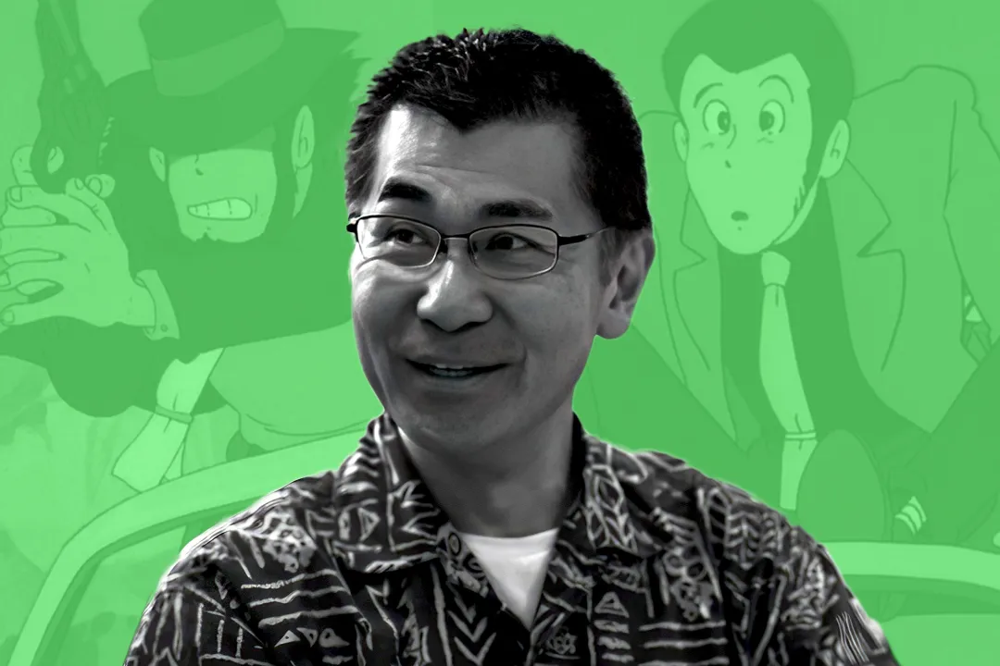

Featured Article
My Favorite Anime: Studio Ghibli animator Akihiko Yamatsura on the anime that changed his life
Akihiko Yamashita, who’s worked on titles as wide reaching as The Big O and Evangelion 2.0, has quite the anime resume. Since 2001, he’s been working with Studio Ghibli, having done work on Spirited Away all the way through The Boy and the Heron. Read more...
Latest News
After being left feeling deflated by the first episode of Nier: Automata Ver1.1a, an adaptation of the outstanding video game from Yoko Taro and PlatinumGames, I didn’t think I’d return to it. It played like what a cynic would expect: an almost one-to-one recreation but with uglier 3D animation; it felt like it was missing something. It didn’t get much of a chance to make a case for itself; even with its sparks of promise, the first half of the show was plagued by multiple delays. But now, thanks to its sharp handling of the game’s overlapping tragedies, well over a year later, the show is leaving me feeling deflated — but in a good way this time... Read More